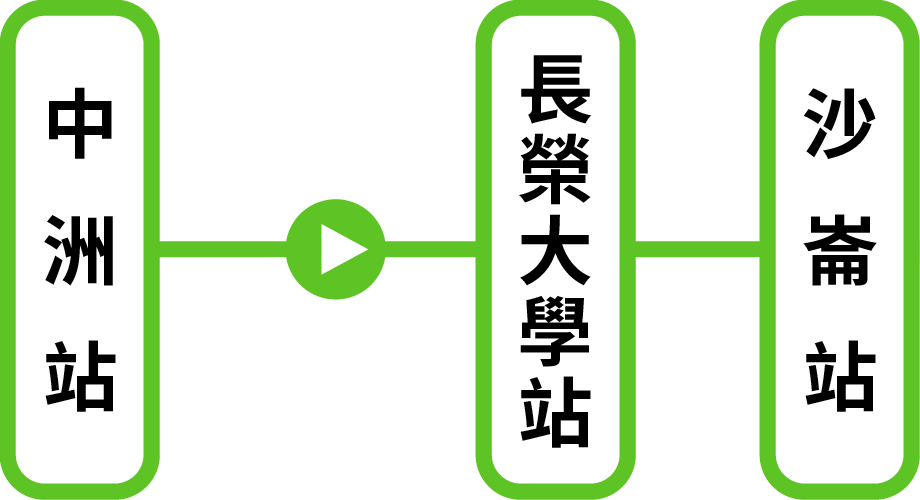

|臺鐵為了方便旅客轉乘高鐵，於民國100年1月2日正式啟用，臺鐵沙崙線列車取代原本搭高鐵接駁巴士，交通時間由原本50分鐘縮短至22分鐘。沙崙線全程皆為高架，還開了首例橫跨國道一號，為臺鐵捷運化轉型實例。特別的是路線還經過長榮大學內，還能搭到別具臺南特色的彩繪圖案列車，讓你的接駁時刻更有樂趣！

|涵碧步道乃指蜿蜒於整個涵碧樓的森林小道，環抱涵碧山，蜿蜒緩行，全程步行時間約一個小時。坡度平緩，階梯處均以紅磚砌築，於綠林中更顯古樸典雅。步道兩側林木蒼蒼，樹流蓊鬱，常見五色鳥、山頭紅、繡眼畫眉等低海拔鳥類。由步道遠眺日月潭，水面如鏡，倒映朦朧山色，風光旖旎，堪稱一絕。
|日月潭纜車連結了伊達邵和九族文化村，纜車上可一覽日月潭的米其林三星級湖景，欣賞群山環繞、吹著徐徐微風。車廂的紅黃藍三色，分別代表日(紅色)、月(黃色)、潭(藍色)三個意像，也代表了日九新遊程的歡樂(紅色)、樂活(黃色)與生態(藍色)水陸空三棲一體的繽紛三彩。
|相傳拉魯島原是邵族人虔信祖靈存聚神聖的一座聖山，邵族人的「先生媽」擇定人選時，得到祖靈的同意，女巫才得到資格，日後才能負起念咒語、主持祭典的重任。